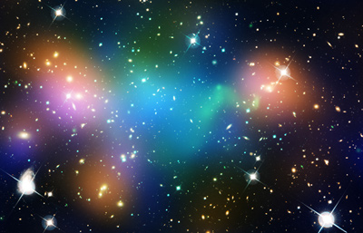

Ever since I was younger, I've done a lot of wondering about things. Whenever something seems arbitrary, I seek a reason for it. Especially while young, I asked a lot of questions to figure things out. I consistently got explanations, too:
"Why do people sleep?"
"To rest their minds and forget unecessary memories."
"Why do waves crash on the beach?"
"The gravity of the moon."
"What is paper made out of?"
"The wood from trees."
"What are the stars in the sky?"
"Distant suns."
But at one point, perhaps at the age of four, I got hungup on a really big question, one I couldn't determine the answer to..
"Where did the universe come from?"
It was scary. How could the universe have been made, if the universe is all that there is? I was astounded with the depth of the contradiction I had discovered: if the universe is everything, then how could it ever have been made by something else? What kind of thing is not part of everything, yet still existent and capable of producing everything? Without a reason for the existence of the universe, for my experience of anything at all, I found myself quite spooked. I envisioned in my mind: myself, on the planet, in the solar system, in the galaxy, in the cluster of galaxies, in the universe, in... what?! All I could fathom was a terrifying void. It laughed in the face of meaning, made my stomach cringe at the thought that my existence and experience is a terrible fluke. The universe shouldn't exist since the default existence is surely nothingness, things must be made, and nothingness can't make anything! I felt a tangible kind of awe, almost fear, at the prospect that by some fluke the universe existed even when, by this reasoning, it surely shouldn’t. There was a void the universe was in, it seemed, and it didn’t belong. Why should anything exist, if the default would work out as nothing existing at all?
What I had to realize was that the entire train of thought was flawed (mind you, I didn't realize this until about the time I entered highschool, and I had stronger analytical\logical skills). That is, I had to take a step back and think metacognitively, to evaluate my reasoning from above:
Is the default existence of everything truly nothingness?
On the contrary; nothing is nonexistent, not everything. The question is obviously a contradiction. This must be due to a confusion on a higher level. That confusion being.. that nothingness can really exist. The better understanding is that everything must be something, by default. To say such is redundant, but with language that suggests nothingness might exist, it is important to be clear and affirm this truth.
Does everything have to be made?
Apparently not – the universe is inherently a counterexample to the rule, since it is all-encompassing, and something cannot make itself without an environment to grow out of. Plus, the universe by definition must be eternal for there could never have been something other than everything, and that which is eternal could not have been previously made for there is no time previous to eternity. It could be suggested that the universe is constantly being created, but what's the difference in that, if the universe is infinite? Addition to infinity is moot. So existence is not dependent on creation; creation is just a convenient and approximating idea we use at our scale of understanding. In fact, nothing is made. All we ever do is combine the ingredients in a cake, or put ink onto paper as a drawing, for example. Artwork is not created; nor cake; nor the universe. Only that which is virtual, like a character in a computer game, can be reasonably described as being created, although even then it's only in one's imagination because in reality bits are just being switched around, not popping into existence.
Does everything (or even anything) require reason?
No, every reason is but a thought of one's mind, a model for approximating reality. Anything can be explained by purely mechanical understanding. Wolves don't exist to eat rabbits, they simply tend to excel at eating rabbits because those that don't tend to die out, while the rest tend to reproduce more, becoming more common.
Even while thoughts can be attributed to purely mechanical descriptions of neurons and hormones and the like, reason can still be seen as necessary in the context of human understanding alone. So it's not as though reason is worthless; it's just that the most philosophical precision is in realizing that reason is only relevant to other purposeful thoughts in our minds, while ultimately (from a universal functioning perspective) it is a totally unecessary and contrived concept.
I found troublesome assumptions and unlearned them. By undoing those contrivances, it became obvious that the universe should be manifest. In realizing this, I resolved the question that had been lurking in the back of my mind ever since I was younger... not by answering it, but by realizing it was uncertain due to confusion.
I understand now that I was reasoning at the extremes. What makes the extremes in any context so important is that they will reveal, through metacognitive reasoning, whether the foundations of a system of logic hold up in all cases or if they will break down and fail, to be proven nonuniversally applicable.
To start, I encountered a hole in my system of logic, and felt very confused – this happened because I considered the most extreme, ultimate context – that of the entire universe. The extremes reveal all of the holes. Instead of asking how, say, paper is made, I had asked how the whole shebang was made to exist.
Then I resolved my confusion by reevaluating the assumptions I held to be true. That, too, is reasoning at the extremes – it's the metacognitive component, whereby you consider your practice of the logic, not the logic itself. You take a step back, reasoning at the extremes of the actual logic.
It makes sense, too, that the universe is simply manifest of its own accord. I mean, anything other than the existence of the universe wouldn’t be existence, right? Let’s not overthink it! The universe is infinite, so it has no limits.
Ever since I reevaluated my big question, I have more simply understood that the universe is manifest without creation or reason. This realization was the beginning of my philosophy.